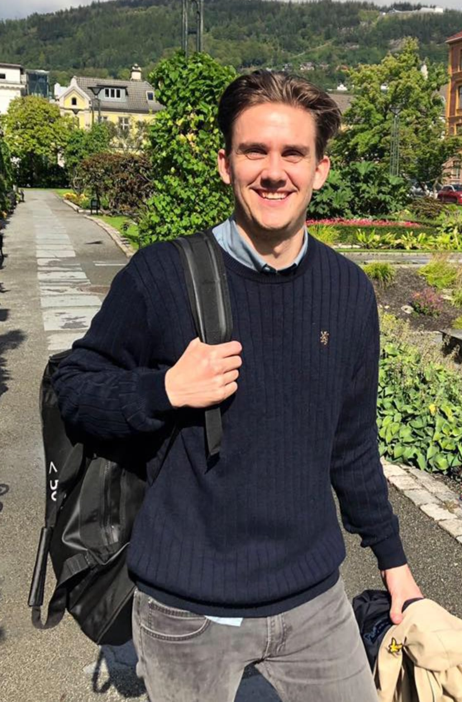

Kasper Kvicksson

Om meg
Jeg har alltid elsket naturen.
Fra tidlige barndomsminner om å utforske skogen bak huset, til voksenlivets avslapning ved sjøen, har jeg funnet ro og glede i naturen.
Jeg ønsker at mine barn og barnebarn også skal få oppleve den samme skjønnheten som jeg har.
Men i løpet av de siste årene har jeg merket at ting forandrer seg.
Sommeren blir varmere, vintrene mer uforutsigbare, og det virker som at den friske luften jeg alltid har tatt for gitt, blir mer forurenset.
Det er ikke bare nyhetene som snakker om klimaendringer lenger; jeg kan føle det i hverdagen.
Sjøen som en gang var krystallklar, er nå full av plast, og skogsområdene jeg pleide å utforske, blir mindre og mindre.
Jeg vil ikke at mine nærmeste skal vokse opp i en verden hvor de må kjempe for ren luft og rent vann.
Jeg ønsker en framtid hvor de kan gå ut av døren og kjenne frisk bris mot ansiktet, hvor de kan se blomstrende trær og høre fuglesang uten bekymringer.
For meg handler det om ansvar. Ikke bare for meg selv, men for dem som kommer etter oss.
Derfor ønsker jeg å leve mer miljøvennlig.
Resirkulere, bruke mindre plast, velge fornybare energikilder, ikke fordi det er trendy, men fordi det er nødvendig.
Det handler om å ta vare på jorden slik at fremtidige generasjoner også kan finne fred i naturen, slik jeg alltid har gjort.
Tilbake til hjemmeside